Modern-C-SmartPtr-2-SharedPtrAndWeakPtr
C++智能指针
shared_ptr 与计数机制
shared_ptr作为现代C++智能指针的一种，又被译作计数指针（按照原名是共享指针），于是，不同于unique_ptr那样， shared_ptr字如其名的——可以共享数据！我们可以复制这个指针，让多个指针都指向同一块内存！
但是让shared_ptr独特于裸指针的是：它引入了计数机制！也就是说，wrap了一个计数器与类对象所指向的内存相关联起来！
我们对其的copy行为在运行中发生一侧，计数器就+1，销毁一次就-1，对外界的接口就是调用方法：use_count()来查看
常量类型的shared_ptr
下面呢：我们来搞一下shared_ptr来指向经典对象的demo:
shared_ptr<int> i_pInt1 = make_shared<int>(10);
cout << "val:>" << *i_pInt1; 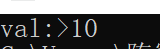
试试use_count:
cout <<"use_count:>"<<i_pInt1.use_count()<<endl;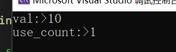
那我们说的copy究竟是啥呢？正是类似于浅拷贝那样，announce 一个指针，直接将地址复制给这个新指针，只是将地址传递给了新指针而没有为这块数据本身做任何拷贝！
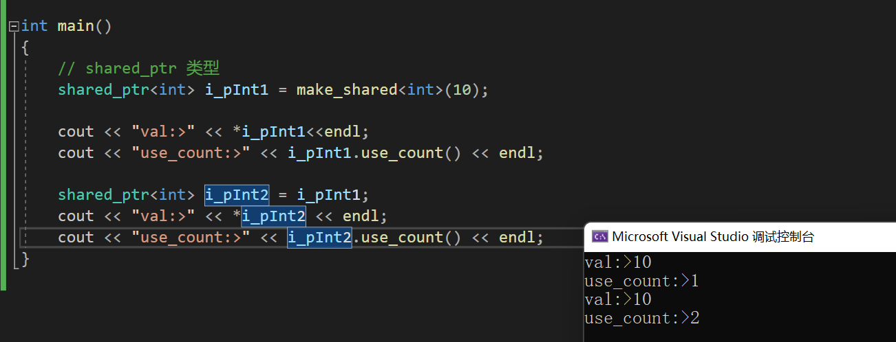
可以看到，这下use_count变成2了！
那就显然了！如果我们通过i_pInt1来改变值，当我们解析i_pInt2的时候，值一定也会变！
//change the val by Path *pVal1 = 20;
*i_pInt1 = 1000;
cout << "val:>" << *i_pInt2 << endl;
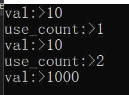
那现在我们的指针的计数还是2，怎么让他减少呢？让其中一个不再指向这块内存就好了！
i_pInt2 = nullptr;
cout << "use_count:>" << i_pInt1.use_count() << endl;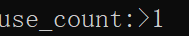
同时，我们注意，那个被指向nullptr的共享指针，他的计数就是0了！因为他这个时候不在指向任何东西！
shared_ptr<int> i_pInt3 = i_pInt1;
shared_ptr<int> i_pInt4 = i_pInt1;
shared_ptr<int> i_pInt5 = i_pInt1;
shared_ptr<int> i_pInt6 = i_pInt1;
// erase i_pInt2;
i_pInt2 = nullptr;
cout << "use_count:>" << i_pInt2.use_count() << endl;
cout << "use_count:>" << i_pInt1.use_count() << endl;
cout << "use_count:>" << i_pInt3.use_count() << endl;
cout << "use_count:>" << i_pInt4.use_count() << endl;
cout << "use_count:>" << i_pInt5.use_count() << endl;
cout << "use_count:>" << i_pInt6.use_count() << endl;
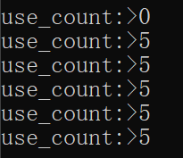
自定义类型的shared_ptr
shared_ptr<dog> pDog1 = make_shared<dog>(dog("111", 100));
*pDog1 << *pDog1;
shared_ptr<dog> pDog2 = pDog1;
shared_ptr<dog> pDog3 = pDog1;
shared_ptr<dog> pDog4 = pDog1;
cout << pDog1.use_count() << " " << pDog2.use_count() << " " << pDog3.use_count() << " " << pDog4.use_count();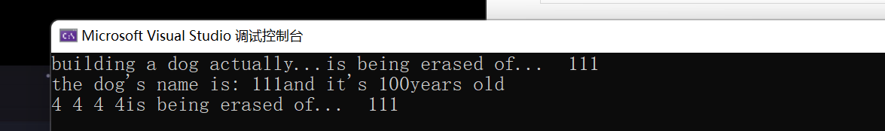
当shared_ptr 中没人指向内存的时候自动释放内存！可以使用reset方法来置空指针为 nullptr!
shared_ptr与函数
值传递
我们使用值传递的时候，我们是使用了copy的，这个时候在函数内部来use_count就会发现计数器+1了，但是当函数结束调用时，指针析构，计数器-1！
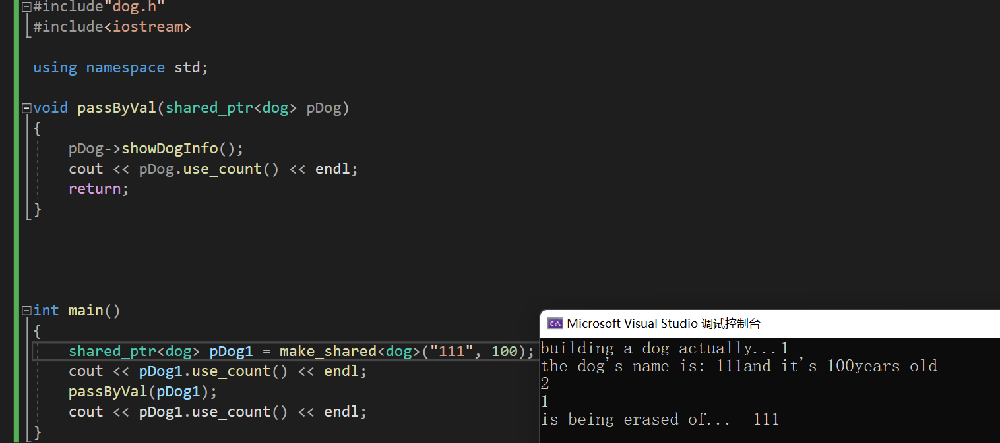
#include"dog.h"
#include<iostream>
using namespace std;
void passByVal(shared_ptr<dog> pDog)
{
pDog->showDogInfo();
cout << pDog.use_count() << endl;
return;
}
int main()
{
shared_ptr<dog> pDog1 = make_shared<dog>("111", 100);
cout << pDog1.use_count() << endl;
passByVal(pDog1);
cout << pDog1.use_count() << endl;
}引用传递
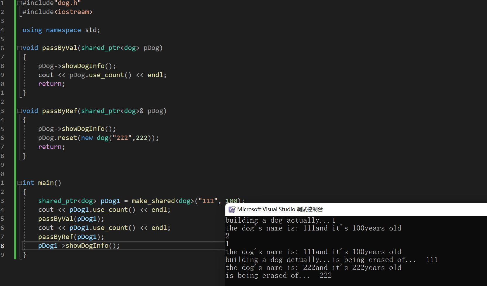
#include"dog.h"
#include<iostream>
using namespace std;
void passByVal(shared_ptr<dog> pDog)
{
pDog->showDogInfo();
cout << pDog.use_count() << endl;
return;
}
void passByRef(shared_ptr<dog>& pDog)
{
pDog->showDogInfo();
pDog.reset(new dog("222",222));
return;
}
int main()
{
shared_ptr<dog> pDog1 = make_shared<dog>("111", 100);
cout << pDog1.use_count() << endl;
passByVal(pDog1);
cout << pDog1.use_count() << endl;
passByRef(pDog1);
pDog1->showDogInfo();
} 显然，我们使用引用并更改之（reset方法）后，资源本身也被更改！因此，倘若我们不想让程序无意间更改资源本身，请在函数参数列表中做出如下的修改，那就是：
void passByRef(const shared_ptr<dog>& pDog)
{
pDog->showDogInfo();
// pDog.reset(new dog("222",222));
return;
}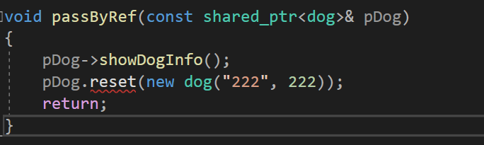
这样就修改不了了！
做返回值
同普通指针类似，这里不做过多的讲解
和unique_ptr的区别
我们可以将unique_ptr转化为shared_ptr,只需使用std::move就好了！但是反之不能！就像只指向一个内存的一个指针可以用多个指针一同指向它！而反之不能！这里，当我们的函数需要返回一个开辟的地址时，强烈建议返回的指针时unique_ptr！这样方便我们使用！随时可以转化为shared_ptr或者给其他指针赋值，反之很困难！
#include"dog.h"
#include<iostream>
using namespace std;
unique_ptr<dog> getUniPtr() {
return make_unique<dog>("111", 100);
}
int main()
{
unique_ptr<dog> pUniDog = getUniPtr();
shared_ptr<dog> pSharedDog = std::move(pUniDog);
} 还是值得注意的是：unique_ptr向shared_ptr 转化的时候是隐式转化的！

#include"dog.h"
#include<iostream>
using namespace std;
unique_ptr<dog> getUniPtr() {
return make_unique<dog>("111", 100);
}
int main()
{
unique_ptr<dog> pUniDog = getUniPtr();
shared_ptr<dog> pSharedDog = std::move(pUniDog);
shared_ptr<dog> pTransform = getUniPtr();
if (!pTransform) {
return -1;
}
pTransform->showDogInfo();
cout << pTransform.use_count() << endl;
}weak_ ptr
这是弱指针！很有趣的是 weak_ptr不可以调用->和*，因为它压根就没有内存的所有权！那他为什么存在？
一个循环引用的例子
下面我们修改dog.h
void setFriend(std::shared_ptr<dog> dog) {
this->friends = dog;
}
//
private:
std::shared_ptr<dog> friends;
#include"dog.h"
#include<iostream>
//ERROR!!!!!!!!!!!!!!!!!!!!!
using namespace std;
int main()
{
shared_ptr<dog> pDog1 = make_shared<dog>("111", 111);
weak_ptr<dog> weak_one(pDog1);
cout << "see:>weak_ptr:" << weak_one.use_count() << " while:> " << pDog1.use_count()<<endl;
shared_ptr<dog> pDogLock = weak_one.lock();
cout << pDog1.use_count() << endl;
cout << weak_one.use_count() << endl;
cout << pDogLock.use_count() << endl;
shared_ptr<dog> pDog3 = make_shared<dog>("333", 3);
shared_ptr<dog> pDog4 = make_shared<dog>("444", 4);
pDog3->setFriend(pDog4);
pDog4->setFriend(pDog3);
}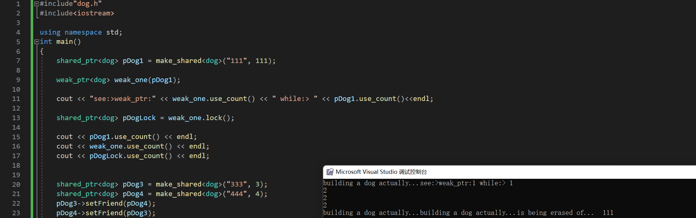
马上发现问题了！好家伙，333和444没被析构！正确的，因为此时他们循环调用导致计数器失灵！
上述问题可以简化为：
当我们有一个类A，需要存储其他A类的对象的信息的时候，倘若我们使用shared_ptr，就会在销毁的时候遇到循环依赖的问题！比若说
#include <iostream>
#include <memory>
using namespace std;
class A {
public:
std::shared_ptr<B> bptr;
~A() {
cout << "A is deleted" << endl;
}
};
class B {
public:
std::shared_ptr<A> aptr;
~B() {
cout << "B is deleted" << endl;
}
};
int main()
{
{
std::shared_ptr<A> ap(new A);
std::shared_ptr<B> bp(new B);
ap->bptr = bp;
bp->aptr = ap;
}
cout<< "Job unfinished,but sadly quit!" endl; // 循环引用导致ap bp退出了作用域都没有析构!
return 0;
} 那怎么办？使用weak_ptr就好了
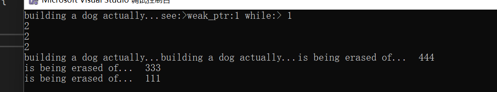
//std::shared_ptr<dog> friends;
std::weak_ptr<dog> friends;构造一个weak_ptr
我们注意到，weak_ptr作为shared_ptr的伴生物，其构造从shared_ptr来！
using namespace std;
int main()
{
shared_ptr<dog> pDog1 = make_shared<dog>("111", 111);
weak_ptr<dog> weak_one(pDog1);
cout << "see:>weak_ptr:" << weak_one.use_count() << " while:> " << pDog1.use_count()<<endl;
}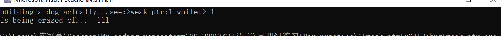
看到了嘛。我们的weak_ptr当被赋予了同样的地址之后，两者的计数器都不会+1！于是，想要解决上面的问题，只需要把其中一个指针改成weak_ptr就好了！
那么，weak_ptr可不可以转化成shared_ptr呢？可以！调用方法lock() 就OK了！
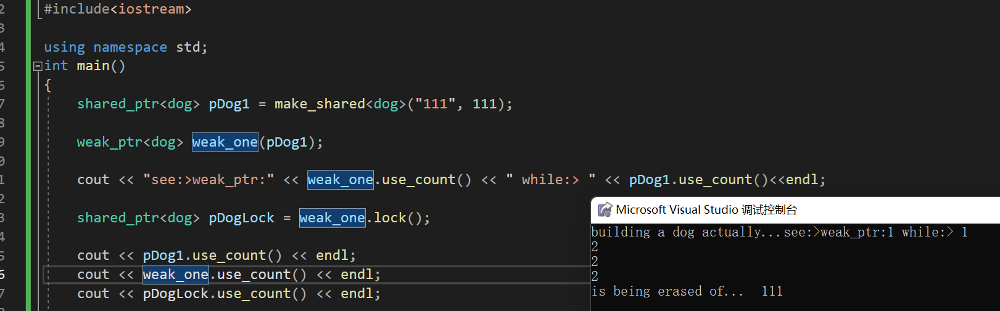